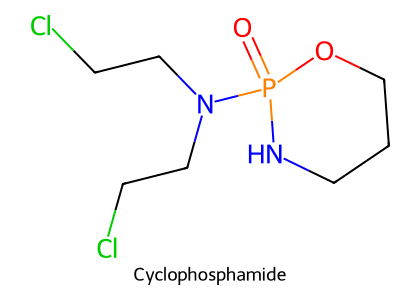
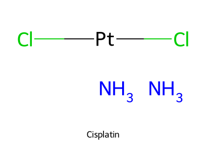
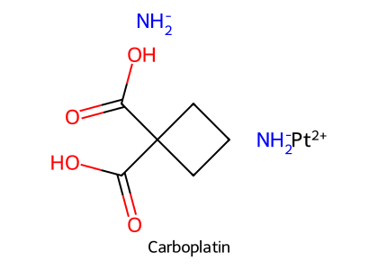
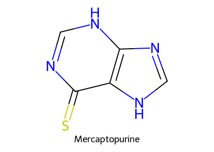
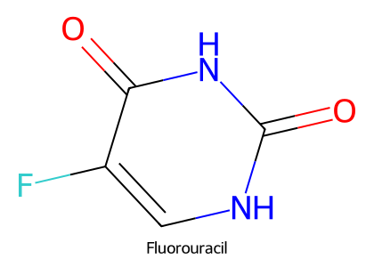
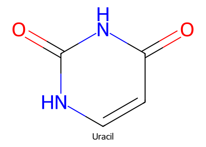
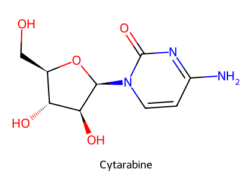
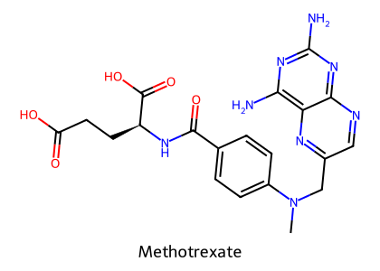
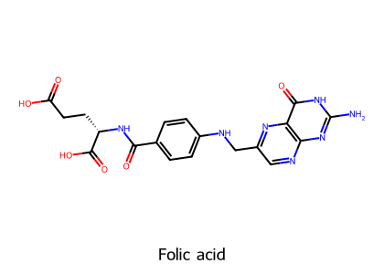
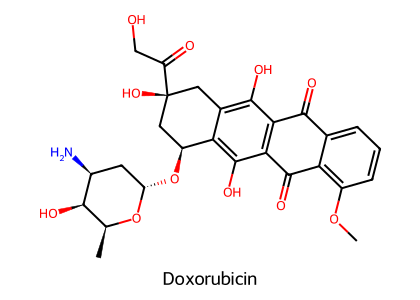

重點摘要
化療藥物的共同目標是快速分裂的細胞——所以它們同時傷害骨髓、腸胃黏膜與毛囊，這三個就是所有化療的共通副作用。藥物依作用方式分類：烷化劑與鉑類直接在 DNA 上（鳥嘌呤 N7）接上烷基或交聯，不分細胞週期；抗代謝物偽裝成核酸原料或阻斷葉酸，專打 S 期；植物生物鹼干擾微管或拓樸異構酶，打 M 期；細胞毒性抗生素嵌入 DNA、產生自由基。每一類各有「招牌毒性」，而且物種差異非常大：cisplatin 在貓造成致命肺水腫、5-FU 在貓造成致命神經毒性、dacarbazine 貓不能用，這些都是考試與臨床最常出現的點。
- Cyclophosphamide、ifosfamide 是前驅藥：肝 P450 活化 → phosphoramide mustard（真正的抗癌活性物，2025 期末考題）＋acrolein（膀胱炎）；Mesna 結合 acrolein。
- Cisplatin：強烈嘔吐與腎毒性；貓禁用（致命肺毒性）。Carboplatin：貓可安全使用、較少嘔吐與腎毒性（2025 期末考題），劑量限制毒性為骨髓抑制。
- 抗代謝物專打 S 期：purine 拮抗劑（6-MP、6-TG，2025 期末考題）、pyrimidine 拮抗劑（5-FU、Ara-C、gemcitabine）、葉酸拮抗劑（methotrexate，解毒劑 leucovorin）。5-FU 貓禁用（致命神經毒性）。
- Vinca 生物鹼（vincristine、vinblastine）讓微管解聚 → 有絲分裂停滯；可治癒犬傳染性性病腫瘤（CTVT）；外滲造成組織壞死。Taxanes 相反，讓微管不能解聚。
- Doxorubicin：獸醫最常用的抗癌抗生素；累積性心毒性（自由基＋鐵在心肌粒線體累積）→ 犬累積劑量上限；Dexrazoxane 螯合鐵保護心臟（2025 期末考題）；只能 IV（外滲壞死）。
- Bleomycin 不太抑制骨髓與腸胃，劑量限制毒性是肺纖維化；L-asparaginase 利用腫瘤缺乏 asparagine synthase，用於犬淋巴瘤，主要風險是過敏。
- Toceranib（c-KIT、PDGFR、VEGFR 抑制）用於無法手術的犬肥大細胞瘤；Piroxicam 用於移行上皮細胞癌等。
- 劑量依體表面積（mg/m²），但會高估小型動物的代謝率 → 小型犬與貓用 doxorubicin 容易過量（VPT10：<15 kg 犬與所有貓改用 1 mg/kg）。
本頁藥物總覽
劑量取自 VPT10 Ch.44（以體表面積 mg/m² 表示）；化療劑量與流程必須依院內腫瘤科規範，這裡只作為了解途徑與尺度的參考。
| 藥物 | 類別／機轉 | 途徑與參考劑量（VPT10） | 主要用途 | 招牌毒性 |
|---|---|---|---|---|
| Cyclophosphamide | Nitrogen mustard 烷化劑（前驅藥） | PO 或 IV；犬 250 mg/m² 單次或分次 50 mg/m²；節拍化療 10–15 mg/m²/day | 淋巴瘤等多種腫瘤；免疫抑制 | 骨髓抑制、無菌性出血性膀胱炎（acrolein） |
| Ifosfamide | 同上 | IV，配合 saline 利尿與 mesna | 犬貓淋巴瘤、軟組織肉瘤 | 腎毒性、膀胱炎 |
| Chlorambucil | Nitrogen mustard | PO | 白血病、淋巴瘤；免疫抑制；發生膀胱炎時取代 cyclophosphamide | 骨髓抑制 |
| Melphalan | Nitrogen mustard | PO | 多發性骨髓瘤 | 骨髓抑制 |
| Mechlorethamine | Nitrogen mustard | IV（現配，t½ 數分鐘） | 很少用 | 明顯 GI 毒性 |
| Lomustine（CCNU）、Carmustine | Nitrosourea 烷化劑，高脂溶性 | CCNU PO：犬 70–80 mg/m² q3wk、貓 50–60 mg/m² q4–6wk | 犬 CNS 腫瘤、復發淋巴瘤、肥大細胞瘤 | 犬累積性肝毒性；嚴重嗜中性球減少 |
| Streptozotocin | Nitrosourea，選擇性作用 β 細胞 | IV，配合 saline 利尿 | 犬胰島素瘤 | 腎毒性、低血糖 |
| Procarbazine | 肝活化成烷化中間物；口服吸收好、穿 BBB | PO | 犬復發淋巴瘤、腦瘤（合併用藥） | — |
| Dacarbazine | 同 procarbazine | IV，先給止吐藥 | 復發淋巴瘤、上皮趨向性淋巴瘤 | 貓不可用（肝代謝不足） |
| Cisplatin | 鉑類：DNA 交聯（鳥嘌呤 N7） | IV，給藥前 4 h、後 2 h saline 利尿；犬 50–70 mg/m² q3wk | 癌、肉瘤、黑色素瘤；生殖泌尿道腫瘤 | 嘔吐、腎毒性；貓禁用（致命肺水腫） |
| Carboplatin | Cisplatin 類似物 | IV（不需 saline 利尿）；犬 300、貓 240 mg/m² q3wk；可混芝麻油瘤內注射 | 同 cisplatin；黑色素瘤較有效；犬骨肉瘤（併 doxorubicin） | 骨髓抑制（第 14 天最低點）、GI |
| Mercaptopurine（6-MP）、Thioguanine（6-TG） | Purine 拮抗劑 | PO | 犬貓白血病；類似物 azathioprine 為免疫抑制劑 | 白血球、血小板減少 |
| 5-Fluorouracil | Pyrimidine 拮抗劑 → FdUMP 抑制 thymidylate synthase | IV、瘤內、局部；犬 150 mg/m² IV 每週 | 各種癌 | 骨髓、GI；貓禁用（致命神經毒性） |
| Cytarabine（Ara-C） | Pyrimidine 拮抗劑，Ara-CTP 插入 DNA | IV 持續輸注數小時（代謝以分鐘計）；SC | 犬貓白血病、淋巴瘤；CNS 淋巴瘤（穿 BBB）；犬腦脊髓膜炎 | 骨髓抑制 |
| Gemcitabine | Pyrimidine 拮抗劑；dFdCDP 抑制核糖核苷酸還原酶 | IV 緩慢輸注 | 各種癌 | 骨髓抑制 |
| Methotrexate | 葉酸拮抗劑，抑制 DHFR | PO／注射 | 淋巴瘤、癌、肉瘤；類風濕性關節炎（免疫抑制） | GI（骨髓較少）；過量解毒劑 leucovorin |
| Vincristine、Vinblastine | Vinca：微管解聚 → M 期停滯 | IV only；vincristine 0.5–0.75 mg/m² 每週 | CTVT（可治癒）、淋巴瘤、肥大細胞瘤（vinblastine） | 白血球減少、神經毒性；外滲壞死 |
| Vinorelbine | 半合成 vinca | IV | 犬貓肺癌 | — |
| Paclitaxel、Docetaxel | Taxane：穩定微管 | IV | 人卵巢癌、乳癌；Paccal Vet | 骨髓抑制；溶劑 cremophor EL 過敏 |
| Etoposide、Teniposide | Topoisomerase II 抑制 | 犬 PO（不 IV：polysorbate 80 過敏） | 血管肉瘤（持續低劑量） | 輕度血液與 GI |
| Doxorubicin（Adriamycin） | Anthracycline：DNA 嵌入、topo II、自由基 | IV only：犬 30 mg/m² q3wk（<15 kg 犬與貓 1 mg/kg），20–30 分鐘緩慢輸注 | 廣譜：淋巴瘤、骨肉瘤、血管肉瘤等 | 累積性心毒性、骨髓、掉毛、外滲壞死；貓腎衰竭 |
| Mitoxantrone | 合成 anthracenedione | IV 5–6 mg/m² | 譜較窄 | 骨髓、GI；犬貓無心毒性報告 |
| Dexrazoxane | EDTA 衍生物，螯合鐵 | IV（與 anthracycline 併用） | 心臟保護 | — |
| Bleomycin | DNA 斷裂＋自由基 | 注射 | 犬貓鱗狀上皮細胞癌、淋巴瘤 | 肺纖維化（劑量限制） |
| L-Asparaginase | 耗盡 asparagine | IV 或 IM（IM 不刺激組織、過敏較少） | 犬淋巴瘤、部分肥大細胞瘤 | 過敏（建議先測試劑量） |
| Prednisolone、Dexamethasone | 糖皮質素 | PO／注射 | 肥大細胞瘤、白血病、淋巴瘤；腦轉移水腫 | 快速產生抗藥性 |
| Tamoxifen | ER 部分促效-拮抗劑 | PO | 犬乳腺腫瘤 | — |
| Piroxicam | NSAID（COX-1／COX-2） | PO | 移行上皮細胞癌、鱗狀上皮細胞癌、乳腺與鼻腔癌 | GI 與腎毒性（貓較嚴重） |
| Toceranib（Palladia®） | TKI：c-KIT、PDGFR、VEGFR | PO q48h（t½ 30 h、吸收 75%） | 無法手術的犬肥大細胞瘤；部分癌與肉瘤 | — |
| Masitinib | TKI：c-KIT、PDGFR、FGFR3 | PO | 肥大細胞瘤 | GI、腎、肝、輕度嗜中性球減少 |
癌症與化療原則
遺傳、年齡、性別與物種；病毒（B 型肝炎病毒、乳突病毒 → 癌症疫苗）；環境與化學致癌物（菸草成分、PM2.5、黃麴毒素、苯、戴奧辛、多氯聯苯）。
APC 抑癌基因（5q）→ Ras 原致癌基因（12）→ DCC 抑癌基因（18）→ p53 抑癌基因（17）→ 其他染色體變化；從正常細胞、腺瘤 I–III、癌到轉移。
為什麼化療要合併用藥
相比之下，細菌感染殺死 99.9% 可能就治癒了。所以化療要：
- 合併用藥：毒性不同、機轉不同、有協同作用；加上手術與放射治療（多模式治療）。
- 藥物之間不共用抗藥機轉、主要毒性不重疊。
- 接近各藥最大劑量使用（最大化劑量強度），追求最大細胞殺滅。
- 劑量以體表面積（BSA，mg/m²）計算，但會高估小型動物的代謝率 → doxorubicin 在小型動物毒性增加。VPT10：<15 kg 犬與所有貓改用 1 mg/kg。
- 治療方式：手術、放射、化療、免疫治療、標靶治療；藥物治療以化療與標靶（後者主要在人醫）。
- 化療即使在轉移時也可能治癒；但某些癌對現有藥物較有抗性（肺癌、大腸癌）。
細胞週期與藥物
| 期別 | 內容 | 作用於此期的藥 |
|---|---|---|
| G1 | RNA／蛋白質合成（p53 在此檢查 DNA 損傷） | — |
| S | DNA 合成 | 抗代謝物（6-MP、5-FU、Ara-C、gemcitabine、methotrexate） |
| G2 | 分裂前 RNA／蛋白質合成 | Bleomycin、etoposide（topo II） |
| M | 有絲分裂 | Vinca、taxanes |
| G0 | 休止期 | — |
| 不分週期 | — | 烷化劑、鉑類、anthracyclines |
烷化劑 Alkylating Agents重要

- 具細胞毒性，多數也致癌
- 不分細胞週期
- 轉移烷基到 DNA，主要位置是鳥嘌呤 N7
- 雙功能（dialkylating）→ 同股或兩股交聯
- 毒性：劑量相關，影響所有快速分裂細胞；骨髓抑制為劑量限制毒性；1 小時內噁心嘔吐
結構式依 PubChem 資料以 RDKit 自繪。
Cyclophosphamide 與 Ifosfamide 的活化
Cyclophosphamide 的代謝物 acrolein 刺激膀胱 → 犬貓膀胱炎，長期可能造成膀胱移行上皮細胞癌。預防：mesna（2-mercaptoethane sulfonate）結合 acrolein。VPT10：犬較貓常見；同時 IV furosemide 可降低犬的發生率；在家口服時要早上給、多喝水、讓動物有充分機會排尿。發生膀胱炎時以 chlorambucil 取代。Ifosfamide 另有腎毒性，以 saline 利尿降低。
| 類別 | 藥物 | 重點（講義） |
|---|---|---|
| Nitrogen mustards | Mechlorethamine | 不穩定需現配、IV、t½ 數分鐘、GI 毒性明顯，很少用 |
| Melphalan | 口服，多發性骨髓瘤 | |
| Cyclophosphamide | 口服，獸醫廣泛使用 | |
| Chlorambucil | 口服，白血病與淋巴瘤；也是免疫抑制劑；cyclophosphamide 膀胱炎時的替代 | |
| Nitrosoureas | Carmustine、Lomustine | 高脂溶性 → 犬 CNS 腫瘤；犬復發淋巴瘤、肥大細胞瘤；犬累積劑量相關肝毒性（肝病禁用）；犬貓嚴重嗜中性球減少。VPT10：近 90% 犬肝指數上升，可併用 denamarin（SAMe＋silybin）減少 |
| Streptozotocin | 選擇性作用 β 細胞 → 只用於犬胰島素瘤；腎毒性（saline 利尿）、低血糖 | |
| 其他 | Procarbazine | 肝活化成高反應烷化中間物；口服吸收好、穿 BBB；犬復發淋巴瘤與腦瘤 |
| Dacarbazine | 機轉同 procarbazine；復發淋巴瘤、上皮趨向性淋巴瘤；IV、先給止吐藥；貓不可用（肝代謝不足） |
鉑類：Cisplatin 與 Carboplatin必考


結構式依 PubChem 資料以 RDKit 自繪。Cisplatin 是 1965 年電解實驗中從鉑電極釋出、意外發現能抑制大腸桿菌增殖，1978 年 FDA 核准（Barnett Rosenberg）。
| Cisplatin | Carboplatin | |
|---|---|---|
| 機轉 | DNA 交聯（鳥嘌呤 N7）、抑制 DNA 合成 | |
| 用途 | 生殖泌尿道腫瘤：癌、肉瘤、黑色素瘤；睪丸、卵巢、膀胱；人併 bleomycin＋vinblastine 可治癒非精原細胞瘤 | 與 cisplatin 相似；對移行上皮細胞癌較差、對惡性黑色素瘤較好；VPT10：併 doxorubicin 治犬四肢骨肉瘤 |
| 給藥 | IV 輸注；VPT10：給藥前 4 h、後 2 h 生理食鹽水利尿 | IV，不需 saline 利尿；瘤內注射（混芝麻油） |
| 主要毒性 | 嘔吐（最強的催吐化療藥）、強腎毒性；輕度骨髓 | GI 與骨髓抑制（劑量限制，嗜中性球最低點約第 14 天）；嘔吐與腎毒性較輕 |
| 貓 | 禁用：致命肺毒性（VPT10：猛爆性肺水腫） | 可安全使用 |
2025 期末考第 7 題：carboplatin 相較 cisplatin 的主要特點 → 貓的耐受性較佳。VPT10 也指出 cisplatin 需要長時間利尿、嘔吐常見，所以臨床常改用 carboplatin。
抗代謝物 Antimetabolites（S 期專一）






結構式依 PubChem 資料以 RDKit 自繪。抗代謝物的設計原理就是「長得像原料」：5-FU 像 uracil、methotrexate 像葉酸、6-MP 像 purine。
| 類別 | 藥物 | 機轉 | 用途 | 注意 |
|---|---|---|---|---|
| Purine 拮抗劑 | 6-MP、6-TG | 磷酸化成 6-thioinosinic acid → 抑制 DNA、RNA 合成 | 犬貓白血病；類似物 azathioprine 為免疫抑制劑 | 肝代謝腎排除：6-MP 經 xanthine oxidase 成 6-thiouric acid；6-TG 甲基化（活性較低）；白血球、血小板減少 |
| ※ 2025 期末考第 6 題：purine 拮抗劑 → thioguanine（adriamycin 為抗生素、Ara-C 為 pyrimidine 拮抗劑、methotrexate 為葉酸拮抗劑）。 | ||||
| Pyrimidine 拮抗劑 | 5-FU | ① FdUMP 抑制 thymidylate synthase（dUMP→dTMP 被擋，dTTP 耗竭）；② FdUTP 插入 DNA；③ FUTP 干擾 RNA | 癌；IV、瘤內、局部 | 骨髓、GI；貓致命神經毒性 → 禁用 |
| Cytarabine（Ara-C） | Ara-CTP 插入 DNA → 阻斷鏈延長 | 犬貓白血病、淋巴瘤；穿 BBB → CNS 淋巴瘤 | 代謝以分鐘計 → 需數小時持續輸注；骨髓抑制 | |
| Gemcitabine | dFdCDP 抑制核糖核苷酸還原酶；dFdCTP 插入 DNA | 各種癌 | 緩慢 IV 提高效果；腎排除；骨髓抑制 | |
| 葉酸拮抗劑 | Methotrexate | 抑制 DHFR → 四氫葉酸耗竭 | 淋巴瘤、癌、肉瘤；類風濕性關節炎（免疫抑制） | 腎排除、不經肝代謝；GI 為主、骨髓較少；人大劑量致命 → leucovorin（N⁵-formyl THF，folinic acid）數小時內解救 |
Methotrexate 擋的是 DHFR（把二氫葉酸還原成四氫葉酸那一步）。Leucovorin 本身已經是四氫葉酸的形式，繞過被擋住的 DHFR，直接補上下游需要的一碳單位，讓正常細胞得以合成核酸。
植物生物鹼 Plant Alkaloids
| 類別 | 機轉 | 用途 | 藥動與毒性 |
|---|---|---|---|
| Vinca 生物鹼（vinblastine、vincristine） | 微管解聚 → 有絲分裂停滯、染色體無法分離 | 治癒犬傳染性性病腫瘤（CTVT）；肉瘤、癌、淋巴瘤；肥大細胞瘤（vinblastine 單用或合併） | 肝代謝、膽汁糞便排出；白血球與嗜中性球減少、神經毒性；外滲 → 組織壞死（只能 IV） |
| Vinorelbine | 半合成 vinca | 犬貓肺癌 | — |
| Taxanes（paclitaxel、docetaxel） | 高濃度：抑制微管解聚（穩定化）、抑制紡錘體；低濃度：染色體錯誤分離 | 人卵巢癌、乳癌 | 骨髓抑制、貓厭食；溶劑 cremophor EL（聚氧乙基蓖麻油）造成過敏；Paccal Vet 改用水溶性微胞，耐受性與效果良好 |
| Epipodophyllotoxins（etoposide、teniposide） | 結合 topoisomerase II → 抑制 DNA 複製、轉錄 | 持續低劑量治療血管肉瘤 | 犬 PO，不 IV（溶劑 polysorbate 80 過敏）；肝葡萄糖醛酸結合後經尿；輕度血液與 GI |
Vinca 讓微管散掉（解聚）；taxane 讓微管散不掉（穩定）。兩者都讓紡錘體無法正常運作 → M 期停滯。另外，抗黴菌藥 griseofulvin 也作用在微管（見 抗黴菌藥物）。
細胞毒性抗生素重要

來自 Streptomyces：doxorubicin、daunorubicin、epirubicin；mitoxantrone 為合成品。Doxorubicin 是獸醫最常用的，劑量受嚴重心毒性限制。
機轉：topoisomerase II 抑制、DNA 嵌入、抑制 DNA 與 RNA 聚合酶；doxorubicin 另產生自由基。
結構式依 PubChem 資料以 RDKit 自繪。
Doxorubicin（Adriamycin）
| 面向 | 內容 |
|---|---|
| 來源 | Streptomyces peucetius；1974 年核准；廣譜抗癌 |
| 途徑 | 只能 IV：口服不吸收；SC、IM 或外滲造成嚴重組織壞死 |
| 藥動學 | 廣泛分布但不進 CNS；肝 aldo-keto reductase 代謝成活性 doxorubicinol；經膽汁糞便排除；犬三相排除（0.04 h、0.44 h、19.8 h；代謝物 30 h，可能是組織蛋白緩慢釋出） |
| 副作用 | 骨髓抑制、掉毛、厭食、嘔吐；心毒性（自由基＋鐵累積在心肌粒線體）→ 心律不整、心衰竭、心肌病變；VPT10 另列貓腎衰竭、快速推注時的組織胺釋放反應 |
| 累積劑量上限 | 犬 180–240 mg/m²（約 5 個療程）；人 300 mg/m²（講義）。VPT10：犬累積超過 180–240 mg/m² 時出現擴張型心肌病變，實務上常把終身上限設在 150 mg/m² |
| 減少心毒性 | 微脂體劑型（t½ 延長、心毒性下降）；Dexrazoxane：EDTA 衍生物，水解成活性形後螯合鐵 → 減少鐵-anthracycline 複合物與自由基生成 |
| 標準劑量（VPT10） | 犬 30 mg/m² 稀釋於 50–100 mL saline，20–30 分鐘 IV，每 3 週；<15 kg 犬與所有貓 1 mg/kg（BSA 計算會讓小型動物過量） |
機轉同 anthracycline；譜比 doxorubicin 窄；劑量限制為骨髓抑制與 GI；犬貓沒有心毒性報告。
醣胜肽混合物（Streptomyces verticillus，1962）；造成 DNA 斷裂並產生自由基；幾乎不影響骨髓與 GI → 適合放在多藥方案中；劑量限制毒性為肺纖維化；皮膚色素沉著、搔癢紅斑；犬貓鱗狀上皮細胞癌與淋巴瘤。其他抗生素：dactinomycin、plicamycin、mitomycin。
※ 人的手足症候群（化療引起的肢端紅斑）：機轉不明，維生素 B6 可減輕（講義）。
其他：酵素、荷爾蒙、NSAID、TKI
| 藥物 | 機轉 | 用途 | 注意（講義） |
|---|---|---|---|
| L-Asparaginase | 來自大腸桿菌等細菌；腫瘤 asparagine synthase 很低 → 耗盡 asparagine 殺死腫瘤 | 犬淋巴瘤、部分肥大細胞瘤 | IV 或 IM（IM 無組織刺激）；過敏（IV 較常見，建議先給測試劑量）：發燒、蕁麻疹、過敏性休克；PEG 結合可避免被網狀內皮細胞攝取 |
| 糖皮質素（prednisolone、dexamethasone） | — | 肥大細胞瘤、白血病、淋巴瘤 | 快速產生抗藥性（出現缺乏 GR 的細胞族群）；也用來處理其他藥物的副作用（過敏、出血性膀胱炎）；dexamethasone 緩解末期疼痛與腦轉移水腫 |
| 性荷爾蒙 | — | 乳癌、攝護腺癌 | — |
| Tamoxifen | ER 部分促效-拮抗劑，對 ER 選擇性高 | 人 ER 陽性乳癌與化學預防；犬乳腺腫瘤 | 副作用輕（見 性腺與生殖賀爾蒙藥物） |
| Piroxicam 與其他 NSAID | 抑制 COX-1、COX-2；許多腫瘤過度表現 COX-2；抗癌機轉不明 | 犬貓膀胱移行上皮細胞癌、鱗狀上皮細胞癌、乳腺癌、鼻腔癌；部分研究延長攝護腺癌犬存活 | GI 與腎毒性，貓較嚴重（見 NSAID） |
| Toceranib（Palladia®） | 小分子 TKI：c-KIT、PDGFR、VEGFR（抗血管新生）；VPT10 另列 FLT3、CSF1R | 無法手術的犬肥大細胞瘤；部分癌與肉瘤 | 口服吸收 75%、t½ 30 h → 隔日給藥。VPT10：轉移或復發的中高等級 MCT 整體反應率約 60%，c-KIT 有活化突變者反應率加倍 |
| Masitinib | TKI：c-KIT、PDGFR、FGFR3 | 肥大細胞瘤 | GI、腎、肝副作用、輕度嗜中性球減少 |
化療共通副作用
化療藥物對所有快速分裂的細胞都有毒性：骨髓、毛囊、腸胃道；輸注期間也可能發生過敏。
| 副作用 | 重點（講義） | 處理 |
|---|---|---|
| 1. 噁心嘔吐 | 化療的主要副作用；刺激 CTZ 與腸胃化學受器（5-HT3）；不同藥物催吐程度不同，cisplatin 最強 | 事先給止吐藥（ondansetron、maropitant 等，見 腸胃道用藥） |
| 2. 骨髓抑制 | 最常見的劑量限制毒性；白血球減少 → 感染風險上升；血小板減少較少成為劑量限制；貧血 | 造血生長因子：G-CSF、GM-CSF |
| 3. 掉毛 | 人非常困擾、通常可逆；明顯掉毛的藥：cyclophosphamide、dactinomycin、doxorubicin、paclitaxel、vincristine | 與飼主溝通；VPT10：cyclophosphamide 可讓貓掉鬍鬚 |
| 4. 組織壞死 | 細胞毒性藥物外滲；可在治療後 2–4 週才出現；最嚴重：doxorubicin、vinca 生物鹼 | 確保靜脈導管通暢、只 IV |
| 過敏 | 輸注期間可能發生（L-asparaginase、paclitaxel 溶劑、etoposide 溶劑） | 測試劑量、改變途徑或劑型 |
臨床整合：物種與共病
- Cisplatin：致命肺毒性（猛爆性肺水腫）→ 改用 carboplatin
- 5-FU：致命神經毒性
- Dacarbazine：肝代謝不足
- Doxorubicin：以 mg/kg 而非 mg/m² 給藥；VPT10 列出可能造成貓腎衰竭
- Piroxicam 等 NSAID：GI 與腎毒性較嚴重
| 病患狀況 | 避免或謹慎 | 理由 |
|---|---|---|
| 心臟病（如擴張型心肌病、易感品種） | Doxorubicin | 累積性心毒性；考慮 dexrazoxane、微脂體劑型，或改用 mitoxantrone |
| 肝病 | Lomustine、carmustine | 累積性肝毒性（講義：肝病禁用） |
| 腎病 | Cisplatin、ifosfamide、streptozotocin、methotrexate、piroxicam | 腎毒性或腎排除 |
| 肺病 | Bleomycin | 肺纖維化 |
| 膀胱炎病史 | Cyclophosphamide | Acrolein；改用 chlorambucil，或併用 mesna、furosemide |
| MDR1 突變犬（Collie 等） | Vincristine、vinblastine、doxorubicin 等 P-gp 受質 | P-gp 缺陷 → 毒性增加（見 藥理學總論 P-gp 段落）。此項為臨床常規提醒，非講義內容 |
| 骨髓已抑制（白血球低） | 多數細胞毒性藥物 | 延後療程或減量；bleomycin、L-asparaginase、vincristine 骨髓抑制較輕 |
| 使用 azathioprine 或 6-MP＋allopurinol | — | 6-MP 經 xanthine oxidase 代謝，allopurinol 抑制此酶 → 濃度上升（藥理推理；講義列出 xanthine oxidase 路徑） |
| 化療期間嘔吐 | — | 止吐藥預防；cisplatin 前一定要給（見 上群：腸胃用藥專題） |
考點整理
- Q4：ifosfamide 在體內發揮抗癌作用的活性代謝物 → phosphoramide mustard（acrolein 是膀胱毒性代謝物、mesna 是解毒劑）。
- Q5：dexrazoxane 減低 doxorubicin 心臟毒性的原理 → 與鐵離子結合（螯合鐵、減少自由基）。
- Q6：purine 拮抗劑 → thioguanine。
- Q7：carboplatin 相較於 cisplatin 的主要特點 → 貓的耐受性較佳。
以下是依講義與教科書推測的方向，並非出自歷屆國考題目：各類抗癌藥的細胞週期專一性；cyclophosphamide 的活化與 acrolein／mesna；貓禁用 cisplatin、5-FU、dacarbazine；doxorubicin 心毒性與 dexrazoxane；methotrexate 與 leucovorin；vincristine 治療 CTVT；L-asparaginase 機轉與過敏；toceranib 用於肥大細胞瘤；骨髓抑制為最常見劑量限制毒性。
學習重點整理
| 類別 | 代表藥 | 機轉 | 招牌毒性／重點 |
|---|---|---|---|
| 烷化劑 | Cyclophosphamide、chlorambucil、lomustine | 鳥嘌呤 N7 烷化、交聯；不分週期 | 膀胱炎（acrolein／mesna）；lomustine 肝毒性 |
| 鉑類 | Cisplatin、carboplatin | DNA 交聯 | Cisplatin 嘔吐腎毒性、貓禁用；carboplatin 骨髓、貓可用 |
| Purine 拮抗 | 6-MP、6-TG | 6-thioinosinic acid | 白血病；azathioprine |
| Pyrimidine 拮抗 | 5-FU、Ara-C、gemcitabine | TS 抑制、插入 DNA | 5-FU 貓禁用；Ara-C 進 CNS、需持續輸注 |
| 葉酸拮抗 | Methotrexate | DHFR | Leucovorin 解救 |
| Vinca | Vincristine、vinblastine | 微管解聚 | CTVT；外滲壞死、神經毒性 |
| Taxane | Paclitaxel | 微管穩定 | Cremophor 過敏 |
| Topo II | Etoposide | Topoisomerase II | 犬口服 |
| Anthracycline | Doxorubicin、mitoxantrone | 嵌入、topo II、自由基 | 心毒性（dexrazoxane）、外滲 |
| Bleomycin | — | DNA 斷裂 | 肺纖維化、不抑制骨髓 |
| 酵素 | L-asparaginase | 耗盡 asparagine | 犬淋巴瘤；過敏 |
| TKI | Toceranib、masitinib | c-KIT 等 | 犬肥大細胞瘤 |